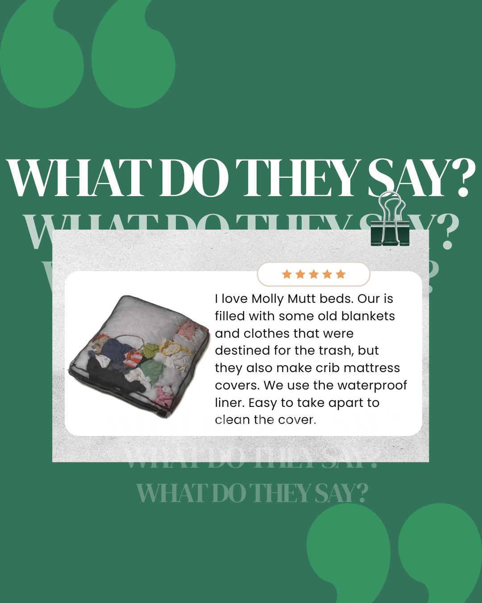
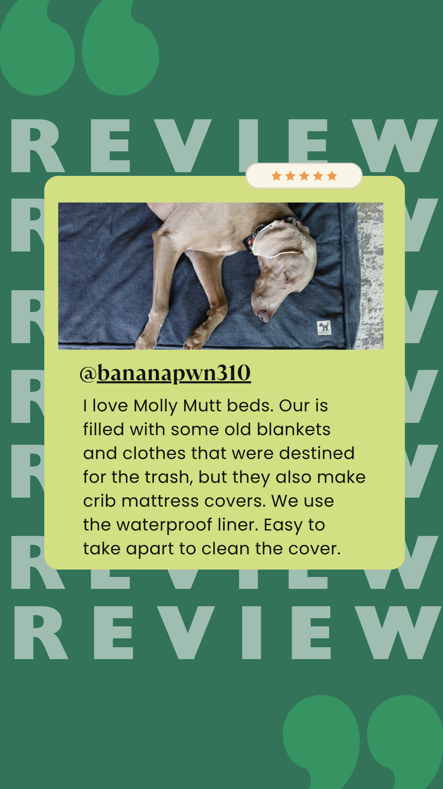

Molly Mutt EU · Part 2 · Own work
Creative assets
Separate from the Molly Mutt group project, these are pieces I built on my own during the course: content the owner can reuse without a production budget.
01
AI Reels from one product photo
I uploaded a real product photo to Google Flow and turned it into 10-second clips. Claude helped write the prompts; I edited in Canva.
The three clips behind it
Each prompt names the subject, one movement, the setting, the light and the camera move, so the clip stays close to the product photo.
Show prompt
Patterned cotton dog bed on a wooden floor. Dust motes drift slowly through the air. Bright living room with a potted plant and stacked books softly visible in the background. Natural daylight from the right, soft and even, no harsh shadows. Slow lateral pan from left to right. Cinematic, lifestyle photography aesthetic.
Show prompt
Patterned cotton dog bed cover in the foreground. Sunlight shifts slowly across the fabric texture. Minimalist home interior, warm wooden shelf softly out of focus in the background. Soft diffused afternoon light from the left in warm golden tones. Slow dolly push-in toward the fabric. Cinematic, shallow depth of field.
Show prompt
A woman in her 30s in a white linen shirt kneels on a wooden floor. She presses folded textiles into an open patterned cotton canvas cover. A medium-sized dog sits upright beside her, watching attentively. Warm, uncluttered living room. Soft natural light from a window on the left in warm white tones. Static medium shot. Warm lifestyle documentary, natural colours.
02
Customer review templates
Reusable Canva templates so the owner can turn a customer review into a post in minutes. No AI.


AI use.
Reels: AI-generated with Google Flow from a real product photo; prompts written with Claude.
Review templates: no AI (Canva).